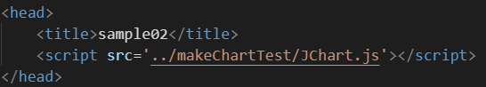

Usage
# 선수조건

Note.
- IE9 이하는 canvas를 지원하지 않는다.
- 캔버스의 폭과 높이 설정 관련
캔버스 명세서에서는 px값을 width/height으로 사용하는것에 대하여 기술적으로 허락하지 않는다.
css속성을 통하여서도 canvas의 사이즈를 조절할 수는 있지만 원치않는 결과가 발생할 수 있다.
(canvas 속성과 css를 통한 크기 동작 방식은 다르다.)
- 캔버스의 폭과 높이 설정 관련
캔버스 명세서에서는 px값을 width/height으로 사용하는것에 대하여 기술적으로 허락하지 않는다.
css속성을 통하여서도 canvas의 사이즈를 조절할 수는 있지만 원치않는 결과가 발생할 수 있다.
(canvas 속성과 css를 통한 크기 동작 방식은 다르다.)
Note.
- getElementById, querySelector, jquery 등 canvas 요소에 접근 가능하면 어느 것이든 무관하다.
JChart를 시작하기 위한 기본 Sample
[ src= /sample/samples01.html ]
Note.
- canvas의 크기를 설정할때 canvas태그를 감싸는 태그, 부모 태그에 크기를 설정할 것을 권장한다.
기본적으로 JChart의 종횡비는 21:9인데, 부모의 크기(canvas만 존재 시 body태그)를 기준으로 종횡비를 계산하기 때문이다.
기본적으로 JChart의 종횡비는 21:9인데, 부모의 크기(canvas만 존재 시 body태그)를 기준으로 종횡비를 계산하기 때문이다.